Salas y sofás
Tapicería a medida · Desde hace 29 años
Muebles con historia.
Los de siempre, para seguir viviendo.
Restauramos y tapizamos sus muebles con el cuidado de un trabajo hecho a mano.
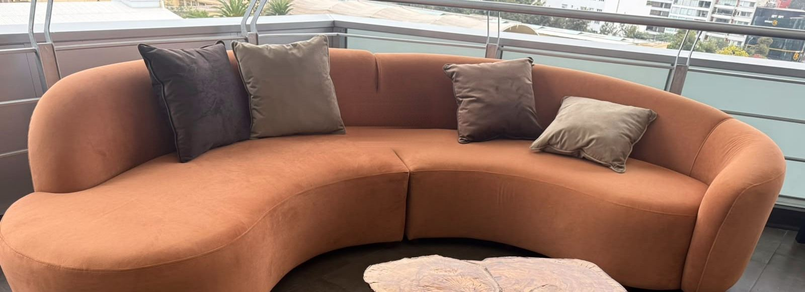
Un oficio que se aprende con las manos.
Miraflores · Surco · San Isidro
Rivera · Un estudio de formas y texturas
El oficio toma forma.
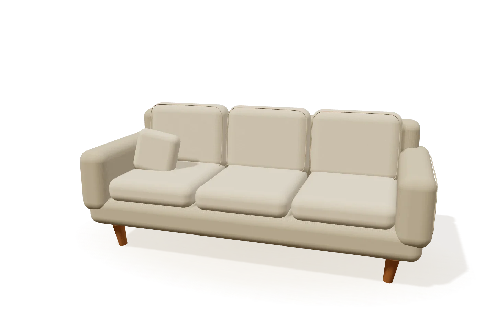
01 / La forma
Un lugar para quedarse.
Líneas sencillas. Proporciones que invitan a sentarse.
Lino claro
Una selección del taller
Nuestro trabajo.
Sofás, butacas y piezas a medida.
De nuestro taller a su casa.
12 trabajos
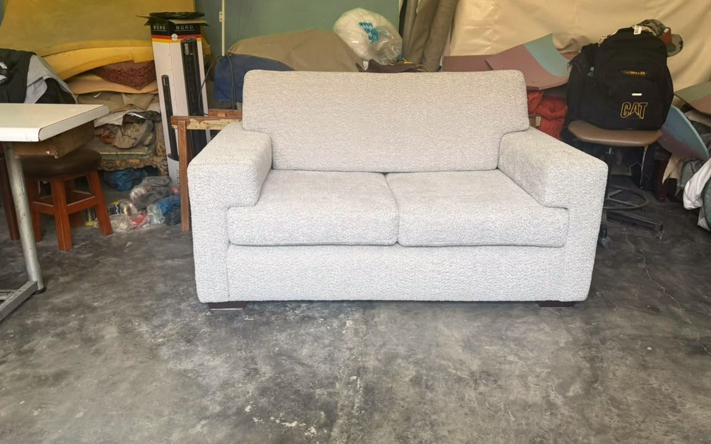
Salas y sofás
Sofá bouclé
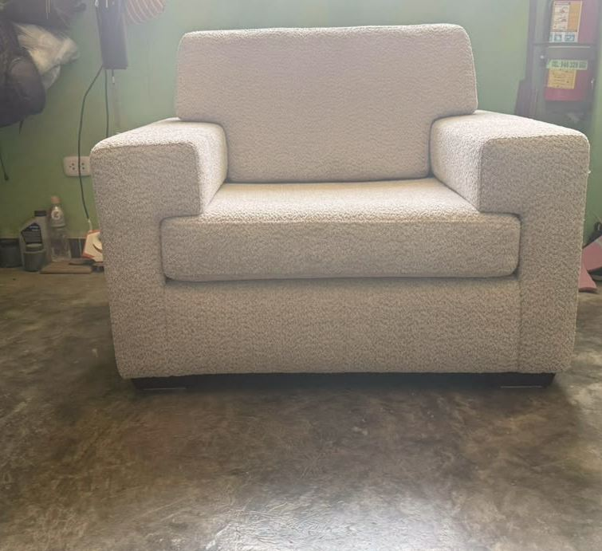
Sillas y butacas
Butaca bouclé
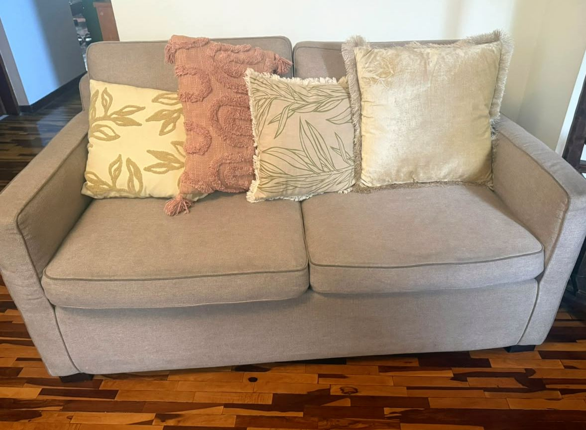
Salas y sofás
Sofá lino avena
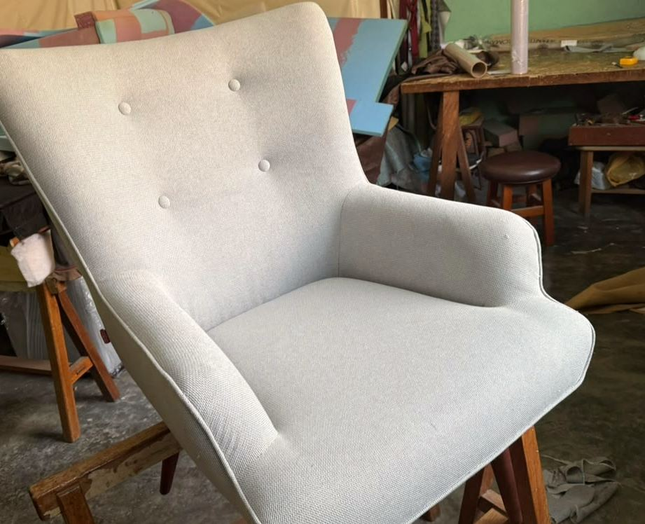
Sillas y butacas
Poltrona gris perla
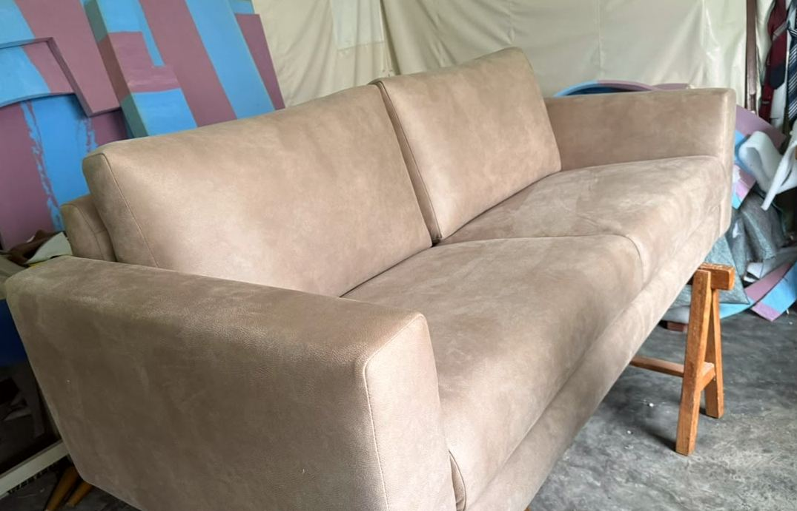
Salas y sofás
Sofá en gamuza
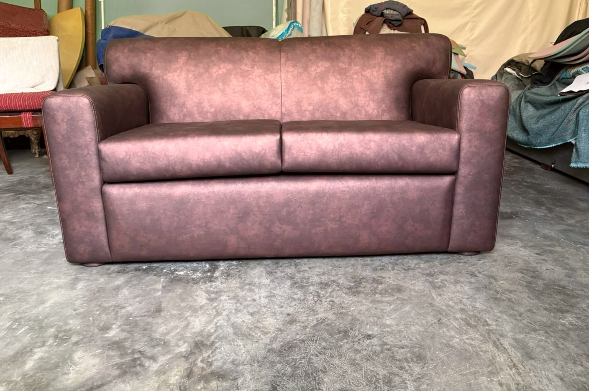
Salas y sofás
Sofá en cuero
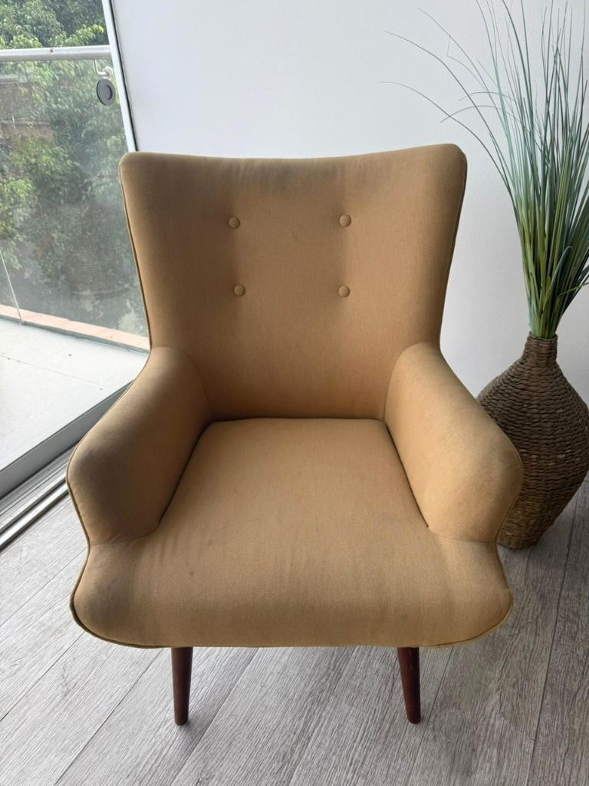
Sillas y butacas
Poltrona mostaza
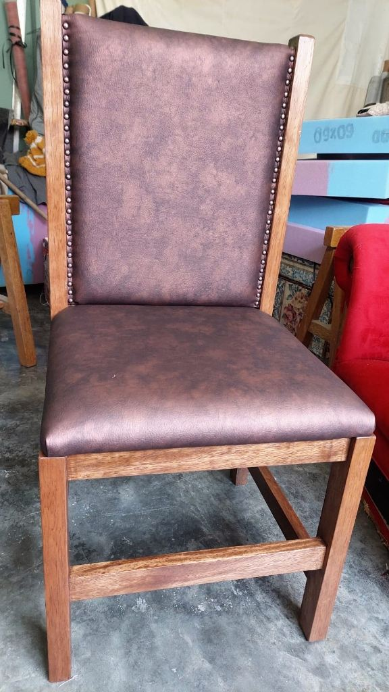
Sillas y butacas
Silla con tachuelas
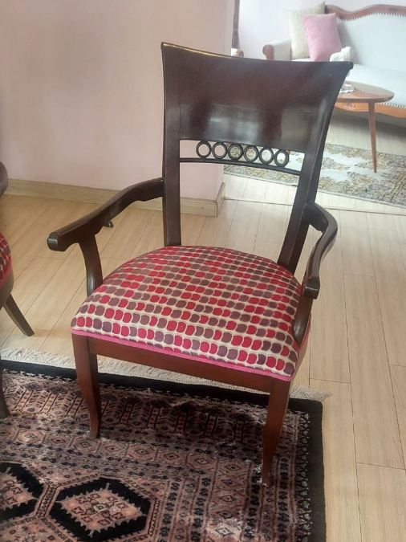
Sillas y butacas
Sillón en jacquard
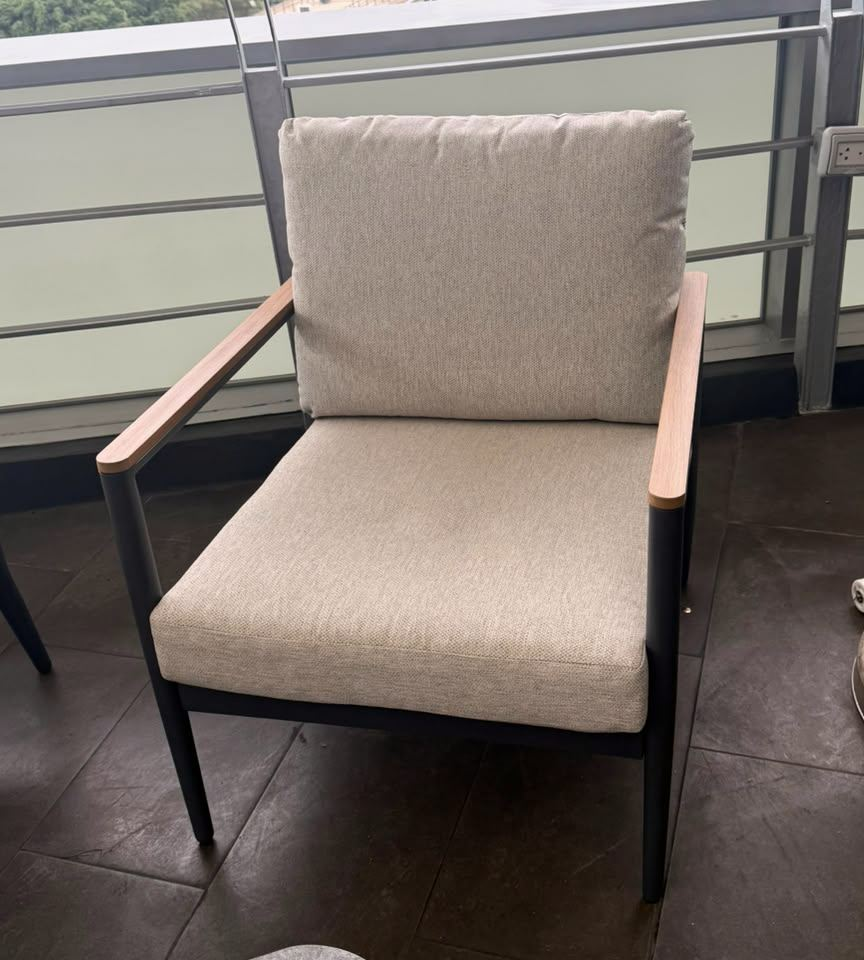
Terrazas
Sillón de terraza
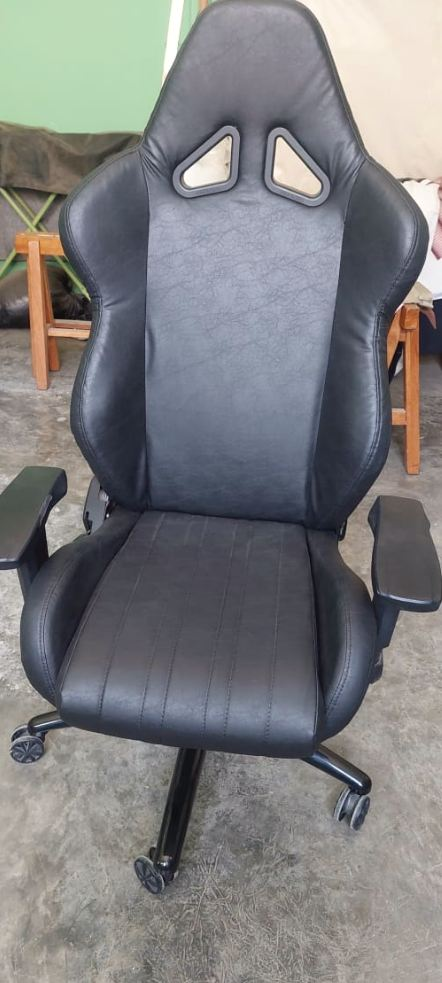
Salas y sofás
Banqueta a medida
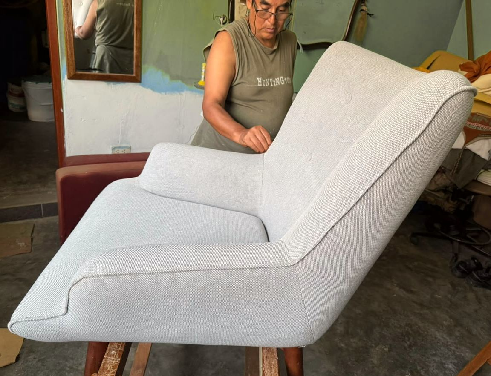
Maestro Rivera · Lima
Hecho a mano.
Con paciencia.
Hace 29 años que trabajamos con telas, madera y espuma. Escuchamos lo que necesita, revisamos su mueble y le ayudamos a elegir cómo renovarlo.
Desde la primera conversación hasta la entrega, el trato es directo con el maestro tapicero.
Conversemos sobre su muebleLo que también importa
Por dentro,
también.
Revisamos la estructura y el relleno antes de colocar la tela. Lo que no se ve también se siente al sentarse.
- 01
Revisamos su mueble
Evaluamos qué se puede conservar y qué necesita renovarse.
- 02
Elegimos los materiales
Tela, textura y firmeza según el uso que le dará.
- 03
Trabajamos a medida
Ajustamos el relleno y cuidamos cada costura.
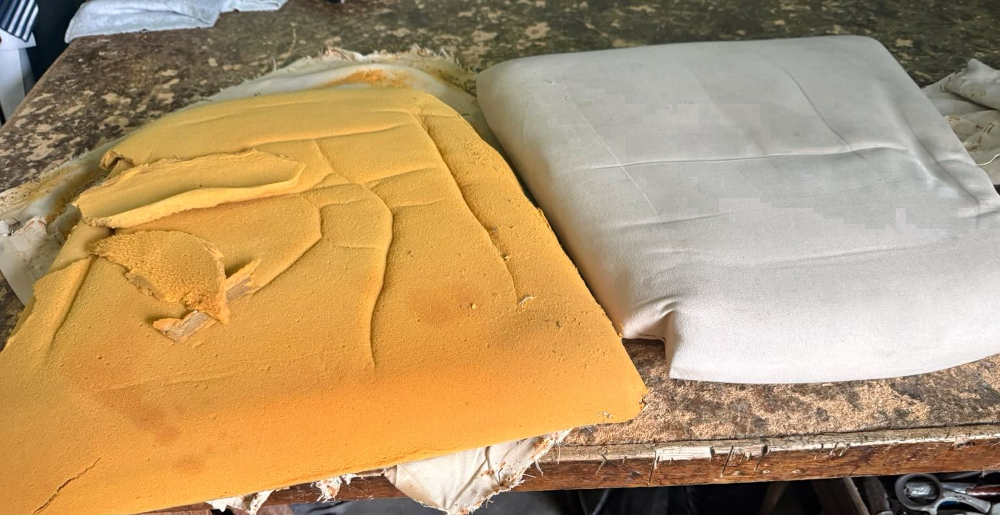
Empecemos por una foto
Su mueble aún
tiene historia.
Envíenos una foto por WhatsApp. Le orientamos sobre el tapizado y coordinamos los siguientes pasos.
Consultar por WhatsApp O llámenos al 997 317 630